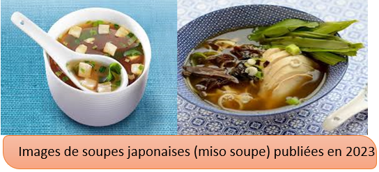

Le Japon possède une forte tradition culinaire et de nombreux rites associés à la consommation de nourriture. La cuisine japonaise repose sur le riz, le soja et les produits de la mer ; elle a été fortement influencée par les cuisines chinoise et coréenne, ainsi que par les cuisines occidentales, dont certains plats ont été adaptés aux goûts locaux.La viande est en général absente de la cuisine traditionnelle.Privilégiant l'harmonie, la cuisine japonaise cherche à sublimer les saveurs des ingrédients plutôt qu'à les cacher sous des sauces épaisses.
La gastronomie japonaise, avec sa richesse de saveurs et sa présentation soignée, a profondément influencé les cuisines du monde, popularisant des plats différents. On cite par exemple:
1/-Les sushis:
Les sushis sont un plat de la cuisine japonaise, constitué de riz vinaigré accompagné de divers ingrédients, tels que du poisson cru, des fruits de mer, des légumes ou même des œufs. Servis sous différentes formes (nigris,makis,sashimi,...), les sushis sont appréciés pour leur fraîcheur, leur simplicité et l'équilibre des saveurs. Aujourd'hui, ils sont populaires dans le monde entier et incarnent l'art culinaire japonais.
2/-Les ramen:
Les ramen sont un plat traditionnel japonais à base de nouilles servies dans un bouillon savoureux, souvent accompagné de viande, de légumes, d'œufs et d'assaisonnements. Ce plat, d'origine chinoise mais profondément intégré dans la culture japonaise, existe sous de nombreuses variantes selon les régions et les ingrédients utilisés. Les ramen sont appréciés pour leur richesse de saveurs, leur texture réconfortante et leur capacité à être adaptés à tous les goûts. Ils sont aujourd'hui populaires dans le monde entier, devenant un symbole de la cuisine japonaise moderne.
3/-Les soupes:
Les soupes japonaises sont simples mais pleines de saveurs. La soupe la plus courante est le miso soup, faite de pâte de miso dissoute dans un bouillon de dashi, souvent accompagnée de tofu, d'algues et de légumes. Ces soupes sont appréciées pour leur légèreté, et sont souvent servies en entrée ou en accompagnement d'un repas. Chaque région du Japon a ses propres variations de soupes, reflétant l'importance de la fraîcheur et de la saisonnalité des ingrédients.
 Retour à l'accueil